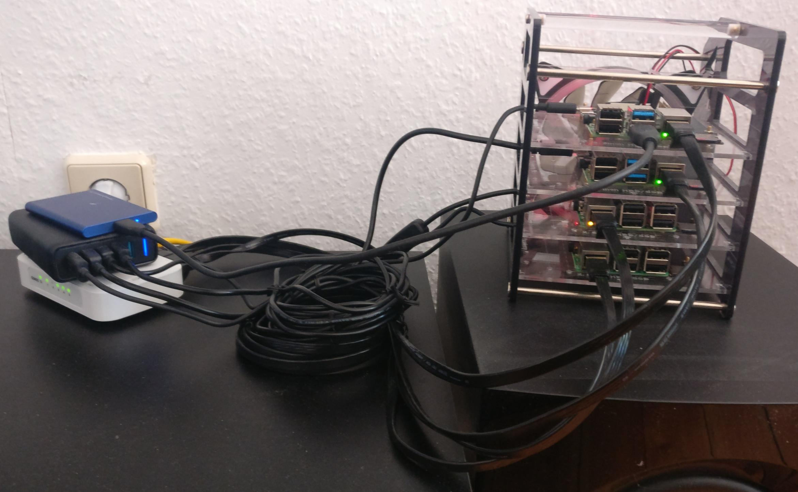

<!DOCTYPE html>
<html lang="en">
  <head>
    <meta charset="utf-8" />
    <meta name="viewport" content="width=device-width, initial-scale=1.0, maximum-scale=1.0, user-scalable=no" />

    <title>reveal-md</title>
    <link rel="shortcut icon" href="./../favicon.ico"/>
    <link rel="stylesheet" href="./../dist/reveal.css" />
    <link rel="stylesheet" href="./../dist/theme/black.css" id="theme" />
    <link rel="stylesheet" href="./../css/highlight/zenburn.css" />

  </head>
  <body>
    <div class="reveal">
      <div class="slides"><section  data-markdown><script type="text/template">## Kubernetes@home

#### Using a bunch of Raspberry Pis and some ketchup
</script></section><section  data-markdown><script type="text/template">

</script></section><section  data-markdown><script type="text/template">
## Overview

1. Why?
2. How?
3. Demo (kinda, maybe)
4. Caveats
5. What next?
</script></section><section  data-markdown><script type="text/template">
## But why?

<ul>
  <li>
    Kubernetes becomes ubiquitous
    <ul>
      <li>DevOps skills are in demand</li>
    </ul>
  </li>
  <li class="fragment">
    It's actually useful
    <ul>
      <li>Basically your private server farm</li>
      <li>Could host Minecraft, rocket.chat, PoCs, ...</li>
    </ul>
  </li>
  <li class="fragment">
    Because it's fun!
    <ul>
      <li>(Probably debatable)</li>
    </ul>
  </li>
  <li class="fragment">
    Because you can (duh)
    <ul>
      <li>It <span style="text-decoration: line-through">is</span> can be cheap</li>
      <li>It's easier than you might think</li>
    </ul>
  </li>
</ul>

<aside class="notes"><p>It would be cheap if it weren&#39;t for the chip shortage.</p>
</aside></script></section><section ><section data-markdown><script type="text/template">

</script></section><section data-markdown><script type="text/template">
## Hardware

* N RaspberryPis
  * N > 0
  * recommended: Raspberry Pi 4B 8GB, currently ~75€

<aside class="notes"><ul>
<li>You could take the 4GB variant as well.</li>
<li>You can easily upgrade at any time.</li>
</ul>
</aside></script></section><section data-markdown><script type="text/template">
## Software

* SSH to access the Pi(s)
* [k3sup](https://github.com/alexellis/k3sup) [ketchup]
* ([k3s](https://k3s.io/))

<aside class="notes"><p>Pronounced &#39;ketchup&#39;</p>
</aside></script></section><section data-markdown><script type="text/template">
## Software

(Assuming you can SSH onto your machines)

```bash
> SERVER=192.168.1.42
> AGENT=192.168.1.43
> k3sup install --ip $SERVER --user pi # setup server
> k3sup join --ip $AGENT --server-ip $SERVER --user pi # join agent
> kubectl --kubeconfig "$PWD/kubeconfig" get nodes
NAME                STATUS     ROLES                  AGE    VERSION
raspberrypirate     Ready      control-plane,master   1m     v1.20.6+k3s1
raspberrypinata     Ready      <none>                 1m     v1.20.6+k3s1
```
</script></section></section><section  data-markdown><script type="text/template">
## Demo

There already is a [demo](https://github.com/alexellis/k3sup#demo-).

<aside class="notes"><p>Ask if I should play the video.</p>
</aside></script></section><section  data-markdown><script type="text/template">
## Caveats

<ul>
  <li class="fragment">
    ARM<span class="fragment">32</span>
    <ul>
      <li class="fragment">Almost always need to change to or even build a compatible image</li>
      <li class="fragment">Sometimes even that isn't possible</li>
    </ul>
  </li>
  <li class="fragment">
    Storage
    <ul>
      <li class="fragment">Always an issue with k8s</li>
      <li class="fragment">k3s-recommended distributed storage solution (Longhorn) doesn't support ARM32</li>
      <li class="fragment">Possible to hook up SSD drives and host NFS</li>
    </ul>
  </li>
</ul>
</script></section><section ><section data-markdown><script type="text/template">
## What's next?
</script></section><section data-markdown><script type="text/template">
### Scaling

* Horizontally - more nodes
* Vertically - better nodes
* Both
</script></section><section data-markdown><script type="text/template">
### Automated Node Upgrades

* [well-documented and easy to setup](https://rancher.com/docs/k3s/latest/en/upgrades/automated/)
* can choose between [release channels](https://rancher.com/docs/k3s/latest/en/upgrades/basic/#release-channels)
</script></section><section data-markdown><script type="text/template">
### HA (High Availability)

* running control plane even if a server node crashes
* requires an odd number of server nodes (at least 3)
* [well-documented and easy to setup](https://rancher.com/docs/k3s/latest/en/installation/ha-embedded/)
* probably a bit much if you don't run anything crucial
</script></section></section><section  data-markdown><script type="text/template">
## Resources

* [k3s](https://k3s.io/) and [documentation](https://rancher.com/docs/k3s/latest/en/)
* [k3sup](https://github.com/alexellis/k3sup)
* [Alex Ellis](https://blog.alexellis.io/), e.g. [Kubernetes Homelab with Raspberry Pi](https://blog.alexellis.io/raspberry-pi-homelab-with-k3sup/)
</script></section></div>
    </div>

    <script src="./../dist/reveal.js"></script>

    <script src="./../plugin/markdown/markdown.js"></script>
    <script src="./../plugin/highlight/highlight.js"></script>
    <script src="./../plugin/zoom/zoom.js"></script>
    <script src="./../plugin/notes/notes.js"></script>
    <script src="./../plugin/math/math.js"></script>
    <script>
      function extend() {
        var target = {};
        for (var i = 0; i < arguments.length; i++) {
          var source = arguments[i];
          for (var key in source) {
            if (source.hasOwnProperty(key)) {
              target[key] = source[key];
            }
          }
        }
        return target;
      }

      // default options to init reveal.js
      var defaultOptions = {
        controls: true,
        progress: true,
        history: true,
        center: true,
        transition: 'default', // none/fade/slide/convex/concave/zoom
        plugins: [
          RevealMarkdown,
          RevealHighlight,
          RevealZoom,
          RevealNotes,
          RevealMath
        ]
      };

      // options from URL query string
      var queryOptions = Reveal().getQueryHash() || {};

      var options = extend(defaultOptions, {}, queryOptions);
    </script>


    <script>
      Reveal.initialize(options);
    </script>
  </body>
</html>
